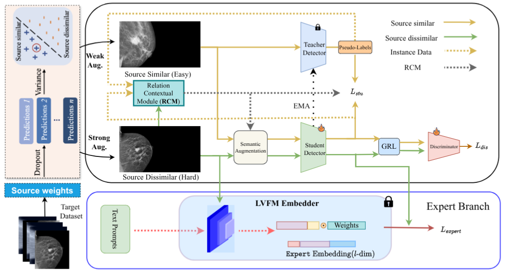

A bias-aware SFOD framework that grounds the teacher through relational context modeling, semantic augmentation, and expert foundational supervision — achieving new state-of-the-art on natural and medical imaging benchmarks.
Source-free object detection (SFOD) faces persistent challenges due to class imbalance–driven context bias and instability in teacher–student training under noisy pseudo-labels. Existing techniques tend to ignore the context bias and class imbalance shift, especially in medical data.
To tackle this, we propose Grounded Teacher (GT), a bias-aware source-free framework that grounds the teacher model through relational and semantic regularization. GT introduces a Relational Context Module (RCM), which maintains an EMA estimate of cross-domain contextual bias, modeling directional inter-class confusions.
Building upon this, a Semantic Augmentation (SA) strategy selectively augments minority and confusable classes through adaptive MixUp in both source-similar and source-dissimilar target regions. A Semantic-Aware Loss (SAL) applies diagonally normalized weights, preventing gradient explosion while emphasizing minority–majority corrections.
Additionally, a frozen Expert branch derived from large vision foundation models (LVFMs) serves as a supervisory reference during training, refining pseudo-label quality without adding inference overhead. Evaluations on Cityscapes→Foggy (50.8 mAP) and medical transfers (+5.9 AP50 on DDSM→INBreast) show consistent gains and improved minority-class detection, with less than 12% additional training cost.
Three compounding problems existing methods fail to address simultaneously
Biased teacher models produce skewed pseudo-labels. As EMA propagates student weights back, error accumulates and the teacher collapses—predicting only dominant classes.
Source-free setting prohibits access to source data during adaptation. Models must transfer knowledge blindly, compounding context bias under large source-target gaps.
Breast-cancer datasets like DDSM have severe imbalance; most images lack majority-class instances. Conventional image-level resampling is ineffective for detection.
Three interlocking modules that break the bias-collapse cycle in source-free settings
Maintains an EMA-updated global confusion matrix across training. Models directional inter-class confusions so downstream augmentation and loss focus on genuinely problematic pairs.
RCM-guided relation-MixUp blends minority instances with their most-confused majority neighbours from a FIFO Cropbank. SAL applies diagonal-normalized, bounded weights to classification loss—preventing gradient explosion while amplifying minority corrections.
A frozen Large Vision Foundation Model (LVFM — BioMedParse for medical, GroundingDINO for natural) supervises the student via pseudo-label regression + SAL. Training-only: zero inference overhead.
The GT framework consists of a student–teacher pair connected by EMA weight updates. The Relational Context Module sits between them, maintaining a running confusion matrix that guides both the Cropbank sampling strategy and the Semantic-Aware Loss.
A frozen Expert Branch (BioMedParse / GroundingDINO) provides an additional supervision signal to the student during training. At inference, only the student runs — the expert adds zero latency.
The variance-based domain splitter partitions target images into source-similar and source-dissimilar subsets, allowing tailored augmentation strength in each region.

static/img/GT_arch.pngEvaluated on natural and medical domain adaptation benchmarks
| Method | SF | Venue | Person | Rider | Car | Truck | Bus | Train | M.cycle | Bicycle | mAP |
|---|---|---|---|---|---|---|---|---|---|---|---|
| Source Only | ✗ | — | 22.4 | 26.6 | 28.5 | 9.0 | 16.0 | 4.3 | 15.2 | 25.3 | 18.4 |
| DA-Faster | ✗ | CVPR'18 | 29.2 | 40.4 | 43.4 | 19.7 | 38.3 | 28.5 | 23.7 | 32.7 | 32.0 |
| EPM | ✗ | ECCV'20 | 44.2 | 46.6 | 58.5 | 24.8 | 45.2 | 29.1 | 28.6 | 34.6 | 39.0 |
| AT | ✗ | CVPR'22 | 43.7 | 54.1 | 62.3 | 31.9 | 54.4 | 49.3 | 35.2 | 47.9 | 47.4 |
| MRT | ✗ | ICCV'23 | 52.8 | 51.7 | 68.7 | 35.9 | 58.1 | 54.5 | 41.0 | 47.1 | 51.2 |
| SFOD-Mosaic | ✓ | AAAI'21 | 25.5 | 44.5 | 40.7 | 33.2 | 22.2 | 28.4 | 34.1 | 39.0 | 33.5 |
| HCL | ✓ | NeurIPS'21 | 38.7 | 46.0 | 47.9 | 33.0 | 45.7 | 38.9 | 32.8 | 34.9 | 39.7 |
| LODS | ✓ | CVPR'22 | 34.0 | 45.7 | 48.8 | 27.3 | 39.7 | 19.6 | 33.2 | 37.8 | 35.8 |
| IRG | ✓ | CVPR'23 | 37.4 | 45.2 | 51.9 | 24.4 | 39.6 | 25.2 | 31.5 | 41.6 | 37.1 |
| PETS | ✓ | ICCV'23 | 46.1 | 52.8 | 63.4 | 21.8 | 46.7 | 5.5 | 37.4 | 48.4 | 40.3 |
| SF-UT | ✓ | ECCV'24 | 40.9 | 48.0 | 58.9 | 29.6 | 51.9 | 50.2 | 36.2 | 44.1 | 45.0 |
| LPLD | ✓ | ECCV'24 | 39.7 | 49.1 | 56.6 | 29.6 | 46.3 | 26.4 | 36.1 | 43.6 | 40.9 |
| OursGT | ✓ | IJCV'26 | 42.7 | 55.4 | 61.7 | 40.7 | 62.0 | 54.6 | 39.1 | 53.0 | 50.8 |
| Oracle | ✗ | — | 66.3 | 61.1 | 80.8 | 45.6 | 68.8 | 52.0 | 49.1 | 54.9 | 59.8 |
Table 1 — DDSM → INBreast (large-to-small, digitised film → full-field digital)
| Method | SF | Venue | R@0.05 | R@0.30 | R@0.50 | R@1.00 | AUC | F1 |
|---|---|---|---|---|---|---|---|---|
| IRG | ✓ | CVPR'23 | 0.05 | 0.05 | 0.07 | 0.09 | 0.110 | 0.120 |
| LPLD | ✓ | ECCV'24 | 0.09 | 0.15 | 0.35 | 0.35 | 0.548 | 0.635 |
| D-MASTER | ✗ | MICCAI'24 | 0.25 | 0.61 | 0.70 | 0.82 | 0.808 | 0.524 |
| OursGT | ✓ | IJCV'26 | 0.06 | 0.45 | 0.65 | 0.92 | 0.589 | 0.758 |
Table 2 — DDSM → RSNA-BSD1K (cross-geography, US acquisition)
| Method | SF | Venue | R@0.05 | R@0.30 | R@0.50 | R@1.00 | AUC | F1 |
|---|---|---|---|---|---|---|---|---|
| IRG | ✓ | CVPR'23 | 0.16 | 0.25 | 0.37 | 0.39 | 0.308 | 0.235 |
| MRT | ✗ | ICCV'23 | 0.32 | 0.52 | 0.69 | 0.72 | 0.741 | 0.352 |
| OursGT | ✓ | IJCV'26 | 0.10 | 0.43 | 0.58 | 0.91 | 0.781 | 0.530 |
Table 3 — RSNA → INBreast (cross-machine acquisition)
| Method | SF | Venue | R@0.05 | R@0.30 | R@0.50 | R@1.00 | AUC | F1 |
|---|---|---|---|---|---|---|---|---|
| IRG | ✓ | CVPR'23 | 0.05 | 0.05 | 0.07 | 0.09 | 0.110 | 0.120 |
| MRT | ✗ | ICCV'23 | 0.03 | 0.09 | 0.12 | 0.17 | 0.739 | 0.587 |
| OursGT | ✓ | IJCV'26 | 0.01 | 0.28 | 0.49 | 0.90 | 0.638 | 0.605 |
Visual comparisons of GT against prior SFOD methods across natural and medical domain transfers. Detection boxes are colour-coded:
GT consistently recovers minority-class detections — trucks and buses in fog, and lesions in mammograms — that source-free baselines miss entirely.